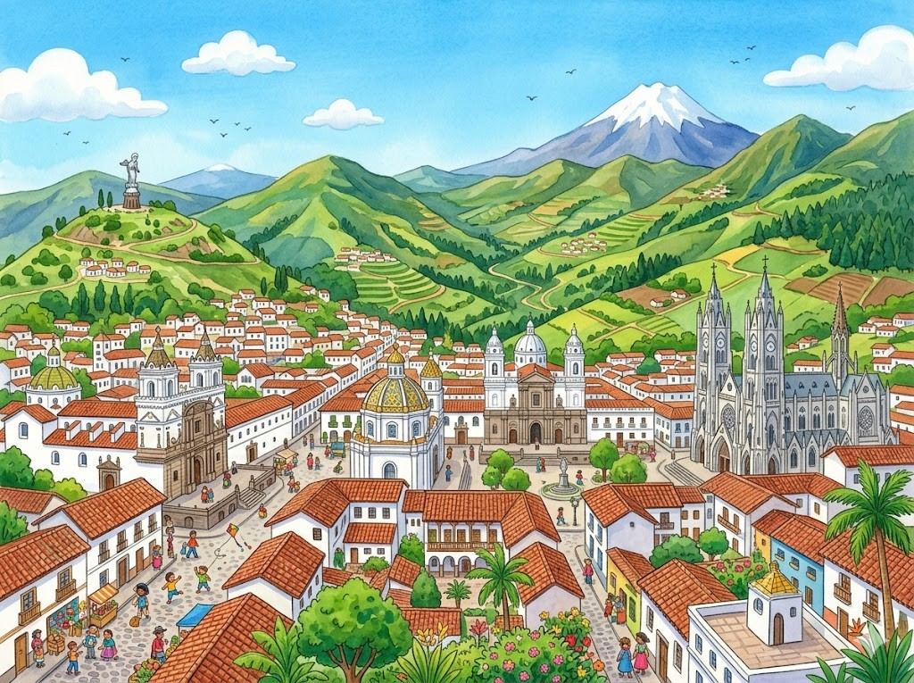
Hier stehen die wichtigsten Daten zu deinem Land. In der App baust du daraus deinen eigenen Steckbrief.
| Hauptstadt | Quito |
| Kontinent | Südamerika |
| Sprache | Spanisch |
| Währung | US-Dollar |
| Einwohner | etwa 18 Millionen Menschen |
| Fläche | rund 256.000 km² |
| Großer Berg | Chimborazo, rund 6.300 m |
| Nachbarländer | Kolumbien und Peru |
In Ecuador gibt es viele berühmte Orte. Diese vier solltest du kennen.
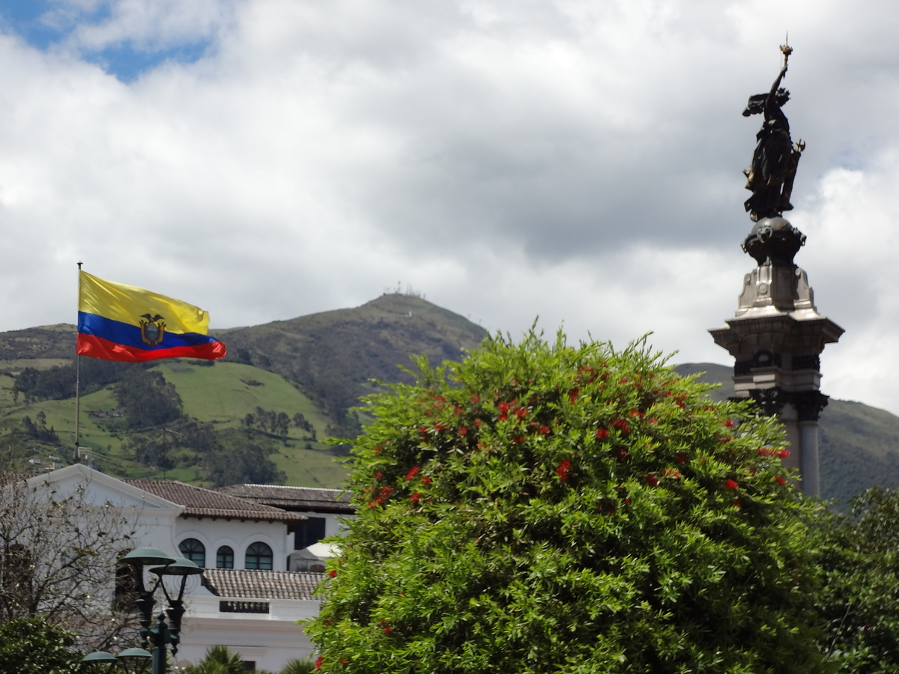
Die Altstadt von QuitoQuito ist die Hauptstadt von Ecuador. Die Stadt liegt hoch oben in den Bergen. Die alte Stadtmitte ist sehr schön und gehört zum Welterbe. Hier stehen viele alte Kirchen aus weißem Stein. Auf den Plätzen treffen sich die Menschen.
Grüne Wörter für die AppQuitohoch oben in den BergenWelterbealte KirchenPlätze
Der Vulkan ChimborazoDer Chimborazo ist der höchste Berg von Ecuador. Er ist ein Vulkan und über sechstausend Meter hoch. Ganz oben liegt das ganze Jahr Schnee und Eis. Sein Gipfel ist der Punkt der Erde, der am weitesten von der Erdmitte weg ist. Viele Bergsteiger wollen ihn besteigen.
Grüne Wörter für die AppChimborazohöchste BergVulkanSchnee und EisBergsteiger
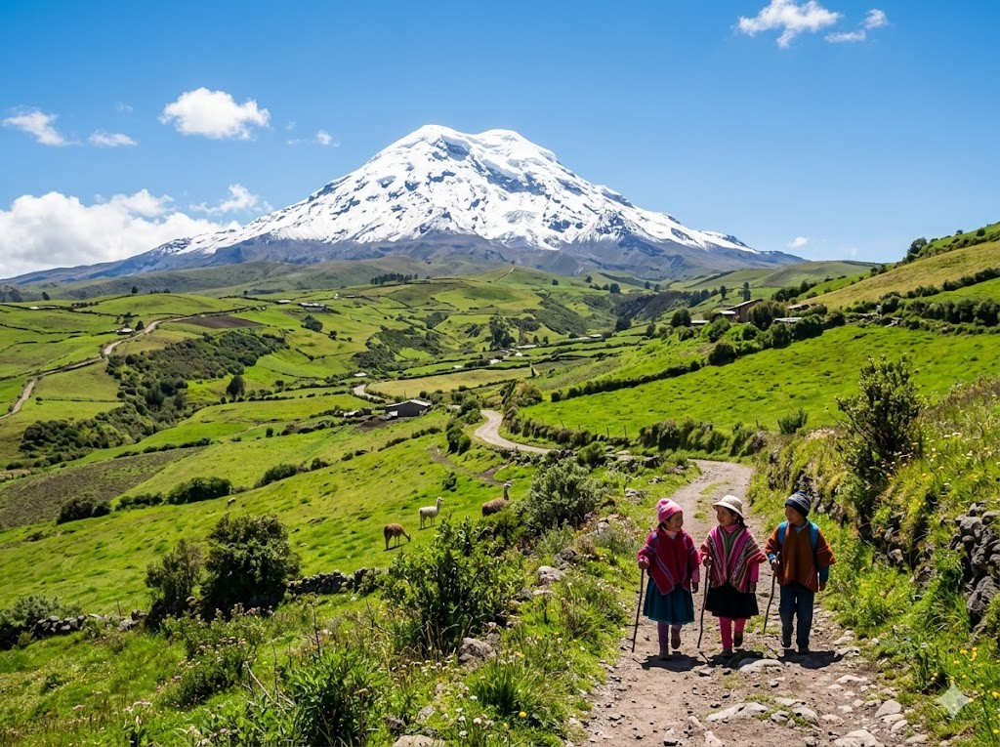
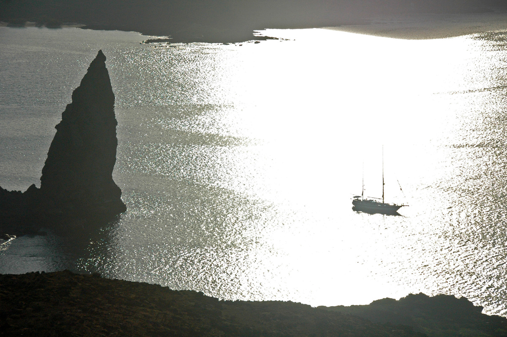
Die Galápagos-InselnDie Galápagos-Inseln gehören zu Ecuador. Sie liegen weit draußen im Pazifik. Auf den Inseln leben Tiere, die es nur dort gibt. Riesige Schildkröten kriechen über die Felsen. Forscher aus aller Welt kommen hierher.
Grüne Wörter für die AppGalápagos-Inselnim PazifikTiereRiesige SchildkrötenForscher
Der Äquator bei Mitad del MundoMitten durch Ecuador läuft der Äquator. Das ist die Linie, die die Erde in zwei Hälften teilt. Beim Denkmal Mitad del Mundo kann man auf dieser Linie stehen. Mit einem Fuß steht man im Norden, mit dem anderen im Süden. Der Name des Landes bedeutet sogar Äquator.
Grüne Wörter für die AppÄquatordie Erde in zwei Hälften teiltMitad del Mundoauf dieser Linie stehenNorden
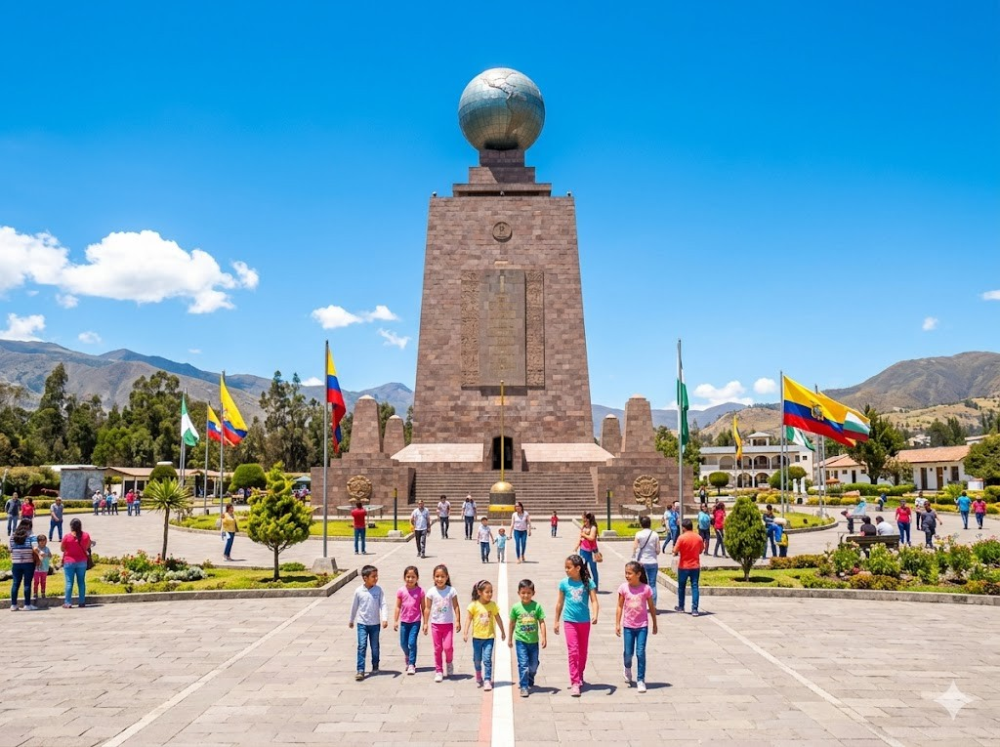
Diese Tiere leben in Ecuador und sind ganz besonders.
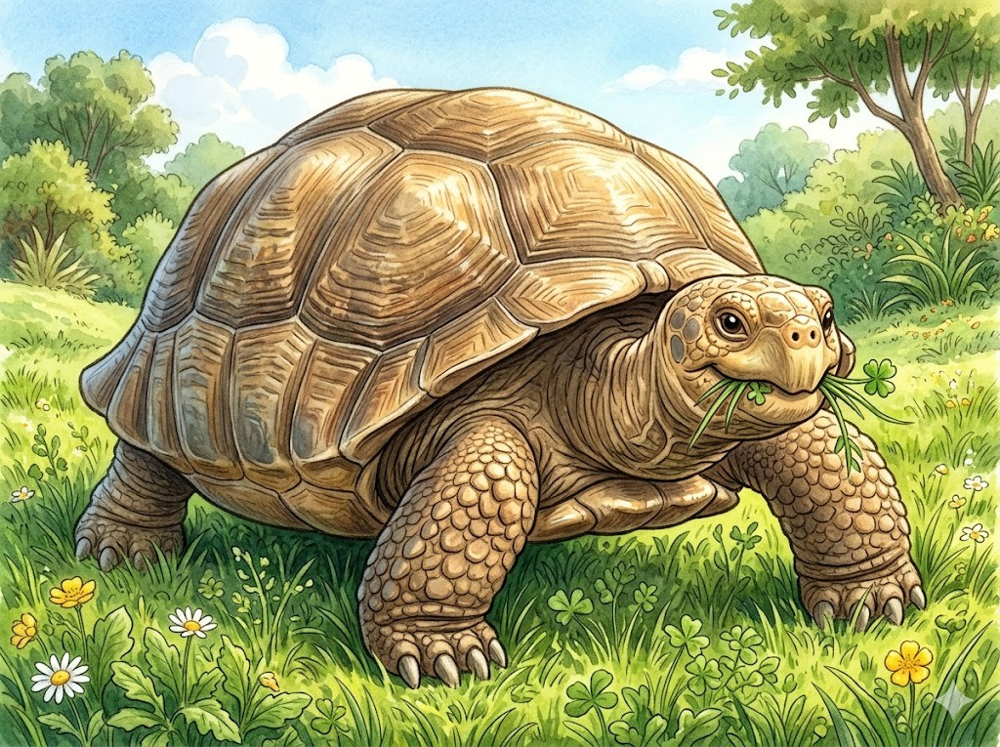
Die RiesenschildkröteAuf den Galápagos-Inseln leben riesige Schildkröten. Sie können älter als hundert Jahre werden. Ihr Panzer ist sehr groß und schwer. Den ganzen Tag fressen sie Gräser und Blätter. Schnell sind sie nicht, dafür sehr ruhig.
Grüne Wörter für die Appriesige Schildkrötenhundert JahrePanzerGräser und Blätterruhig
Der KondorDer Anden-Kondor ist ein sehr großer Vogel. Seine Flügel sind weiter gespannt als ein Mensch groß ist. Er segelt hoch über den Bergen durch die Luft. Mit den scharfen Augen sucht er nach Futter. Der Kondor ist das Wappentier von Ecuador.
Grüne Wörter für die AppAnden-Kondorgroßer VogelFlügelüber den BergenWappentier
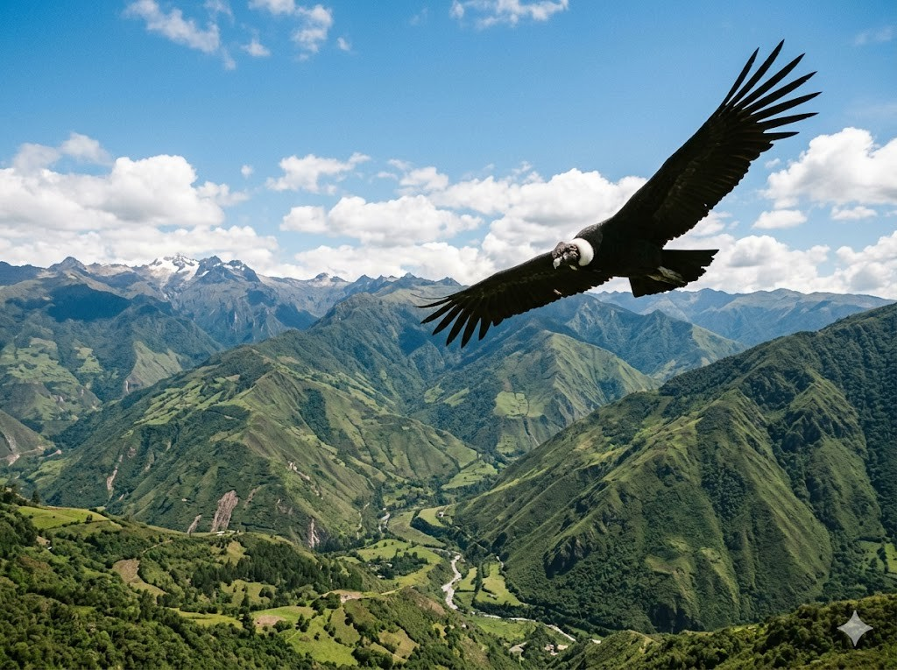
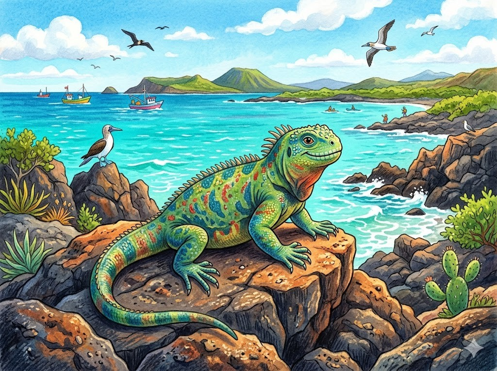
Der LeguanAuf den Galápagos-Inseln leben besondere Leguane. Manche von ihnen schwimmen sogar im Meer. Sie tauchen unter Wasser und fressen Algen. Danach liegen sie auf den warmen Felsen in der Sonne. Vor Menschen haben sie keine Angst.
Grüne Wörter für die AppLeguaneschwimmenAlgenwarmen Felsenkeine Angst
In der App kannst du beim Essen das Foto nehmen oder dein Gericht selbst malen.
EncebolladoEncebollado ist eine warme Fischsuppe. Sie ist in Ecuador sehr beliebt. In der Suppe sind Fisch, Zwiebeln und Maniok. Oft isst man sie schon zum Frühstück. Sie macht satt und wärmt von innen.
Grüne Wörter für die AppEncebolladoFischsuppeZwiebelnManiokFrühstück
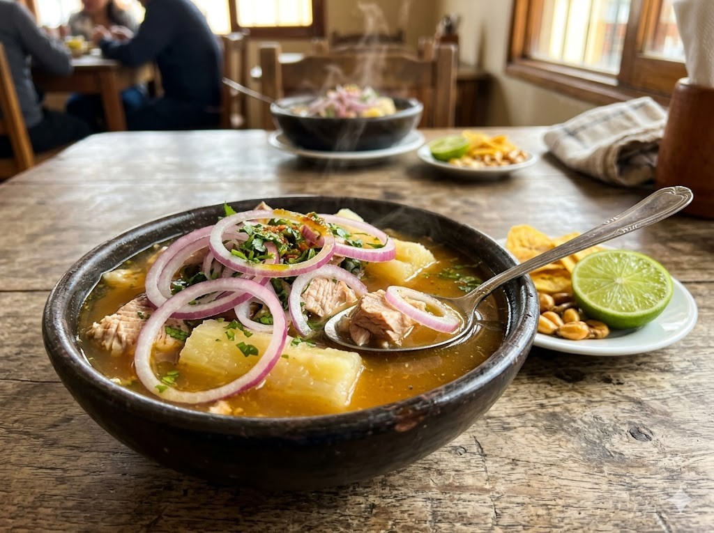
LlapingachosLlapingachos sind kleine Puffer aus Kartoffeln. In der Mitte stecken sie voller Käse. Sie werden in der Pfanne goldbraun gebraten. Dazu gibt es oft Wurst und Salat. Kinder mögen sie besonders gern.
Grüne Wörter für die AppLlapingachosKartoffelnKäsegoldbraunWurst und Salat
Frische BananenIn Ecuador wachsen sehr viele Bananen. Das Land verkauft Bananen in die ganze Welt. Es gibt gelbe süße und grüne feste Sorten. Die grünen werden in der Pfanne gebraten. So schmecken sie wie Pommes.
Grüne Wörter für die AppBananenin die ganze Weltgelbe süßegrünegebraten
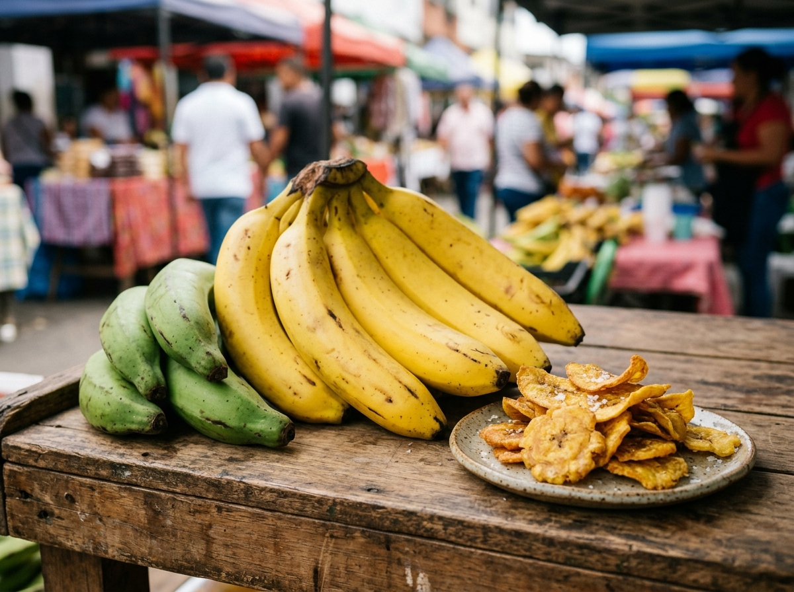
Die Nationalmannschaft von Ecuador heißt La Tri. Der Name kommt von den drei Farben der Flagge. Ecuador hat sich für die WM 2026 qualifiziert. Der bekannteste Spieler ist Moisés Caicedo. Er spielt in England bei Chelsea.
Grüne Wörter für die AppLa Tridrei Farben der FlaggeWM 2026Moisés CaicedoChelsea
In der SchuleDie Kinder in Ecuador lernen auf Spanisch. Unten an der Küste ist es warm, in den Bergen kühler. Darum beginnt die Schule nicht überall zur gleichen Zeit. Viele Kinder tragen eine Schuluniform. Nach der Schule helfen sie zu Hause mit.
Grüne Wörter für die AppSpanischan der Küstein den BergenSchuluniformhelfen sie zu Hause
Spiel und FreizeitFußball ist bei den Kindern sehr beliebt. Überall spielen sie auf Plätzen und Straßen. Oben in den Bergen ist es oft kühl, am Meer warm. Am Wochenende fahren viele Familien zum Markt. Dort gibt es frisches Obst und Musik.
Grüne Wörter für die AppFußballauf Plätzen und Straßenin den Bergenzum MarktMusik
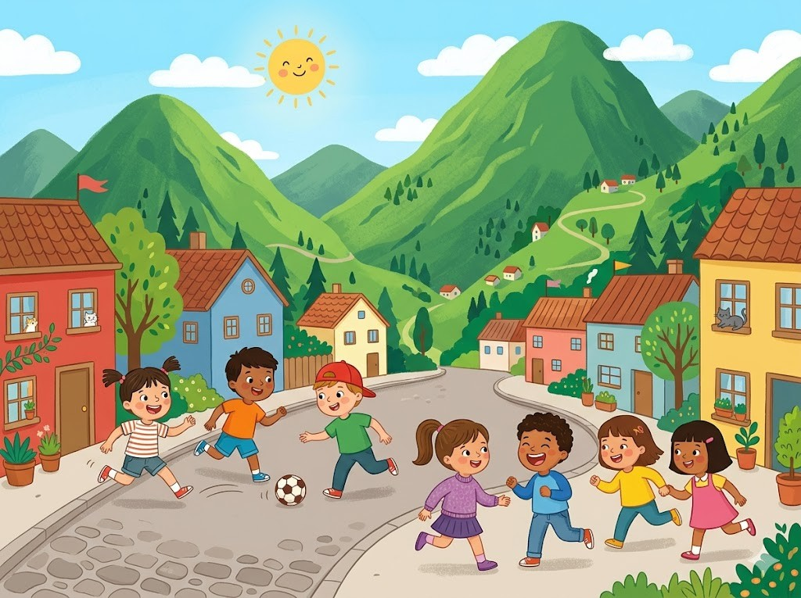